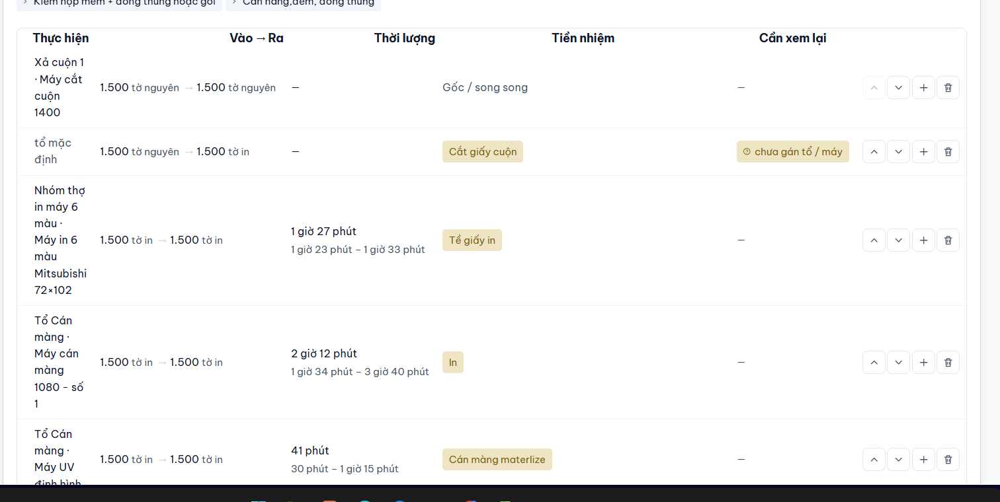

Bảng công đoạn của lệnh: sửa ngay trên bảng
Yêu cầu: thêm cột Ghi chú ở cuối để gõ thẳng; có nút mở Cấu hình chi tiết; chọn loại bước, tổ, máy ngay ngoài bảng. Dữ liệu là lệnh thật LSX26-0005 trên DB dev (10 bước). Thời lượng chỉ có 3 bước trong ảnh hiện tại là số thật; các bước còn lại ghi “giả định”.
Đã đọc gì trước khi vẽ
LsxRoutingTable.tsx: bảng 8 cột (#, Công đoạn, Thực hiện, Vào → Ra, Thời lượng, Tiền nhiệm, Cần xem lại, thao tác). Bảng chỉ xem; mọi chỉnh sửa phải bấm tên bước mở ngăn. Bốn nút lên / xuống / chèn / xoá đứng thẳng hàng.LsxBuocDrawer.tsx: tab “Cấu hình & Số lượng” có 3 nút Máy / Tổ / Thuê ngoài (doiLoaiBuoc: đổi sang Tổ thì xoá máy và đưa số lượt về 1; sang Thuê ngoài thì xoá tổ, máy, vật tư) và ô Ghi chú kỹ thuật cho thợ (ghi_chu). Tab “Phân công & Thiết bị” có ô Tổ phụ trách và Máy sản xuất.lsxBuoc.ts:mayChonDuocchỉ mời máy của công đoạn và thuộc tổ đang chọn,mayMacDinhCuaTotự điền máy khi đổi tổ. Ô chọn ngoài bảng sẽ dùng đúng hai hàm này, nên không có luật mới.- Lưu vẫn là “Lưu công đoạn” (thay cả bảng một lần). Sửa ngoài bảng chỉ đổi bản nháp, giống sửa trong ngăn.
- Cột Ghi chú ghi vào đúng
lsx_cong_doan.ghi_chuđang có, không thêm cột DB.
Hiện tại

Chỗ hỏng: ngăn hẹp nên bảng cuộn ngang, mất luôn cột “#” và “Công đoạn” (không thấy tên bước); cột Thực hiện dồn tổ + máy xuống 4–6 dòng; muốn đổi tổ hay gõ một câu ghi chú cũng phải mở ngăn.
Tham khảo Pinterest (đã mở và xem; Pinterest chặn lượt tìm thứ hai khi chưa đăng nhập nên chỉ lấy từ lượt “editable table inline dropdown ui”)

P1. Ô có công tắc và trạng thái sửa ngay trong hàng
Học: điều khiển nằm sẵn trong ô, không phải mở hộp; cột hiếm dùng thì giấu qua nút chọn cột. ⇒ Phương án A.

P2. Bấm một ô hiện bong bóng nhỏ có Lưu / Huỷ
Học: bảng vẫn gọn như bảng đọc, chỉ ô đang sửa mới bung ra. ⇒ Phương án B.

P3. Bảng rộng, bên phải là từng thẻ xếp dọc
Học: khi chật, một hàng thành một thẻ hai tầng: tầng trên để đọc, tầng dưới để chọn. ⇒ Phương án C.

P4. Thao tác hàng: menu ⋯ thay cho dãy nút
Học: gom lên / xuống / chèn / xoá vào một nút ⋯ để lấy chỗ cho ô sửa. Dùng ở cả ba phương án.